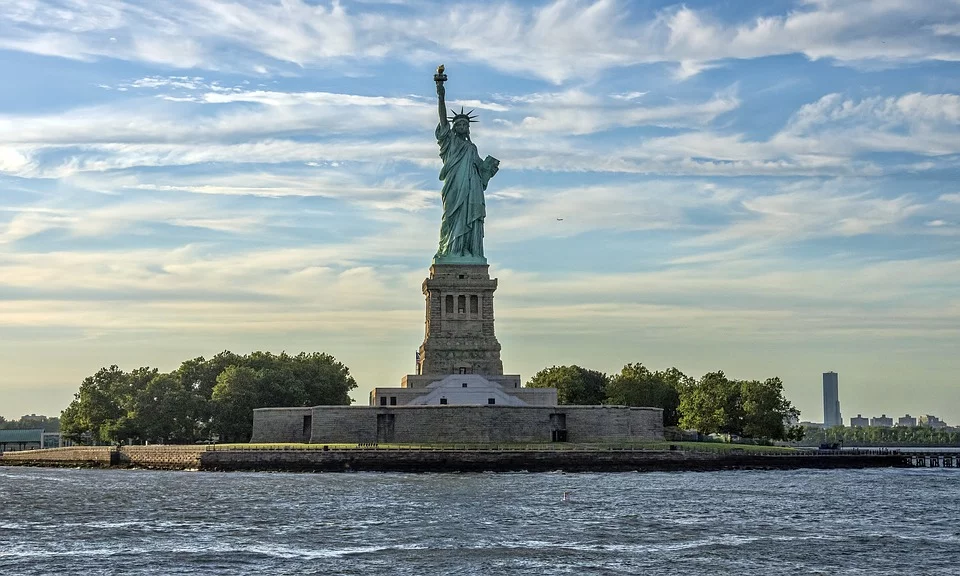

L'histoire de la statue de la Liberté
La statue de la Liberté a été fabriquée par le sculteur Frédéric Bartholdi et de Gustave Eiffel pour la charpente métallique
, cette statue colossale est un cadeau de la France  pour les Etats-Unis à l'occasion du centenaire de l'indépendance.
Elle a été inaugurée en 1886.
pour les Etats-Unis à l'occasion du centenaire de l'indépendance.
Elle a été inaugurée en 1886.
 Le portrait de Gustave Eiffel et de Frédéric Bartholdi.
Le portrait de Gustave Eiffel et de Frédéric Bartholdi.
Cette immense statue creuse est constituée de fines plaques de cuivre repousse sur une carcasse en acier.
Elle se dresse sur une île, c'est l'île LIberty Island et elle se situe à l'entrée du port de New York.
A l'époque sa conception et sa construction été reconnues comme l'une des grandes prouesses techniques de
du XIXème siècle. De plus, le socle sur lequel elle se tient debout a été frabriquer par l'architecte américain
Richard Morris Hunt. La structure interne en acier est un formidable ouvrage de construction complexe, symbole avant-coureur
de l’avenir de l’ingénierie, de l’architecture et de l’art, notamment avec l’utilisation massive de béton dans son piédestal,
la construction de type mur-rideau qui soutient la couche extérieure et l’utilisation de l’électricité pour éclairer la torche.
Édouard René de Laboulaye a collaboré avec Bartholdi pour la conception de la statue afin d’incarner l’amitié internationale, la paix,
le progrès et, plus spécifiquement, l’alliance historique entre la France et les États-Unis. Le financement par souscription internationale
a également joué un rôle significatif. Parmi les symboles extrêmement forts de sa conception se trouve la Déclaration d’indépendance des États-Unis
que la statue brandit dans sa main droite, ainsi que les chaînes brisées sur lesquelles elle pose le pied. 
Ici on peut voir le statue sur son piédestal sur l'île Liberty Island.
Depuis que cette statue est exposée, elle est entretenue et n'a subi aucune modification majeure. De plus, les déformations des métaux dû au temps
ont été corrigées par des travaux importants durant son centenaire en 1986, comme la reproduction de la torche qui aujourd'hui est exposée au musée.
La structure interne en acier soutenant la peau de métal a été remplacée en 1986 par de l’acier inoxydable qui ne subira pas de corrosion. Toutes les
réparations ont été réalisées dans le plus grand respect de la conception et des matériaux d’origine. L'un des symboles de la statue de la Liberté : La Torche
L'un des symboles de la statue de la Liberté : La Torche
La Statue de la Liberté est la propriété du gouvernement des États-Unis d’Amérique. La statue a été classée Monument national en 1924 (le Monument
national comprend en outre Liberty Island [1937] et Ellis Island [1965]), et elle est gérée par le service des parcs nationaux. Ces mesures lui confèrent
le plus haut niveau possible de protection.La statue reçoit un grand nombre de visiteurs, elle dispose d’un personnel important ainsi que d’équipements qui
comprennent un centre d’information des visiteurs, un musée de l’histoire de la statue et le musée de l’Immigration sur Ellis Island. L’accès par ferry comporte
des dispositifs de contrôle des visiteurs ; la sécurité du bien est une préoccupation constante.
Retour vers la page sur la tour Eiffel : ici
Retour au sommaire
Vers la page sur le Taj Mahal :ici